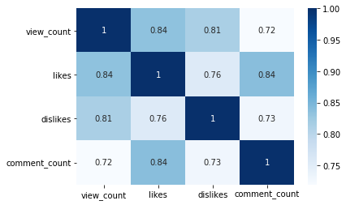
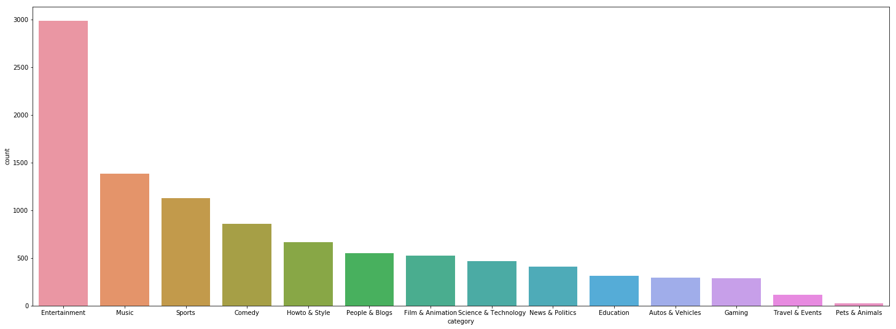
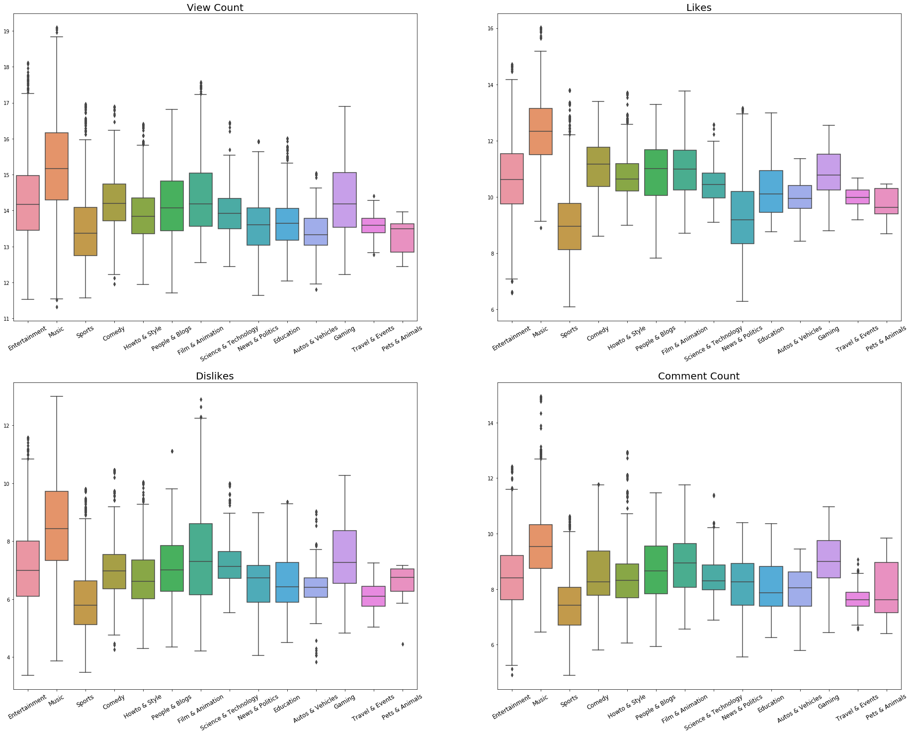
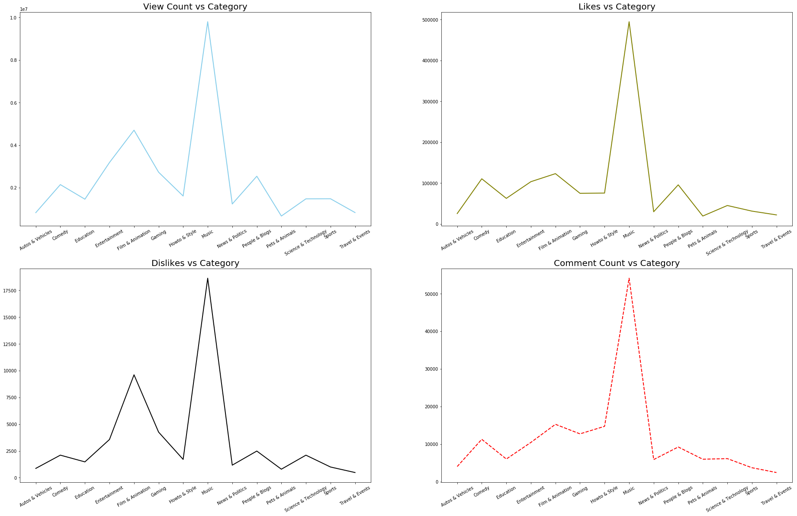
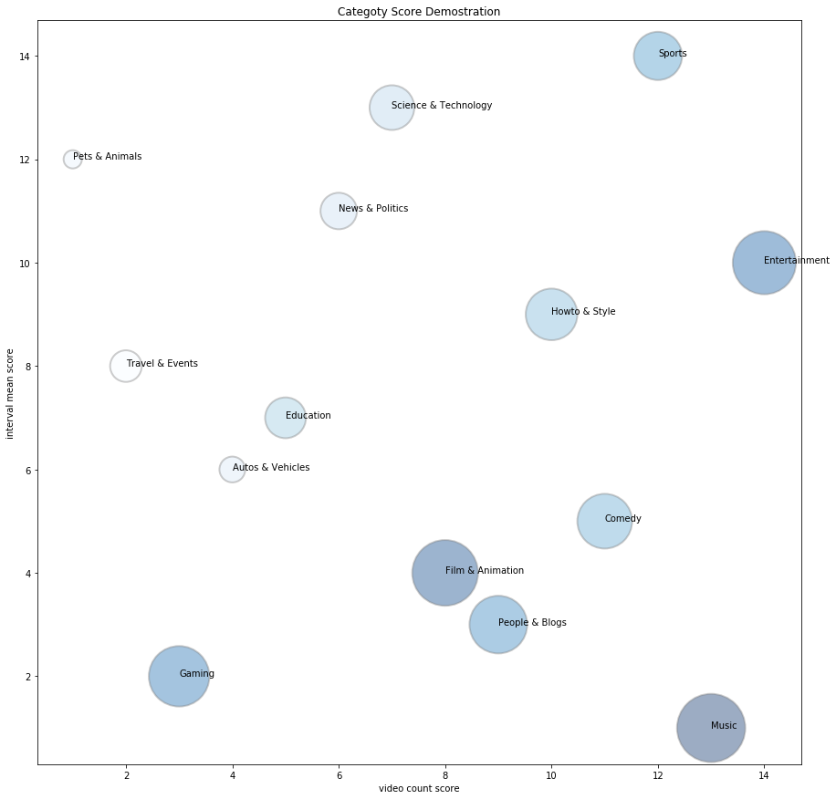
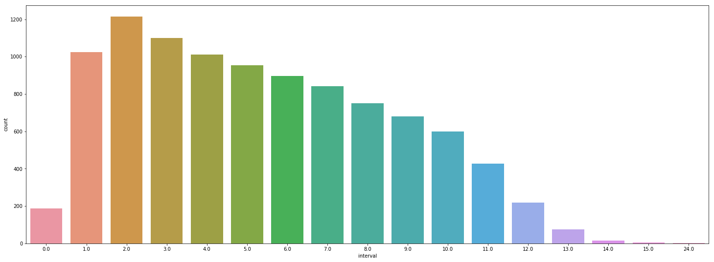
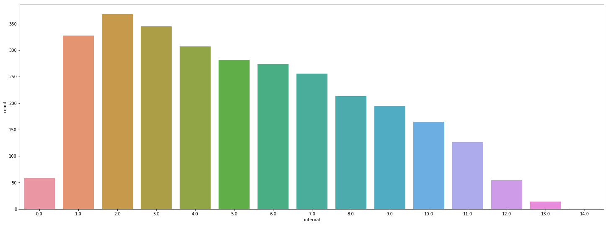
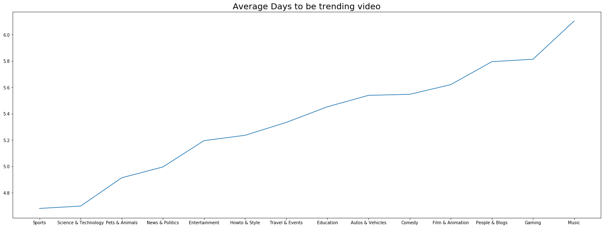
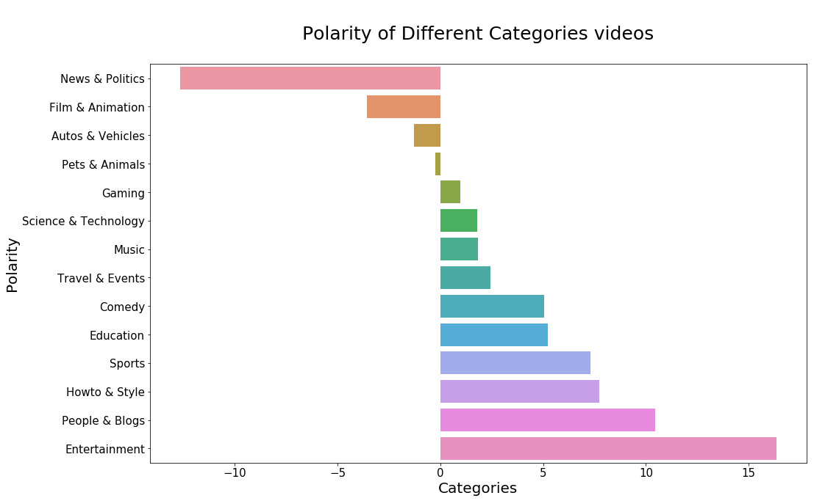
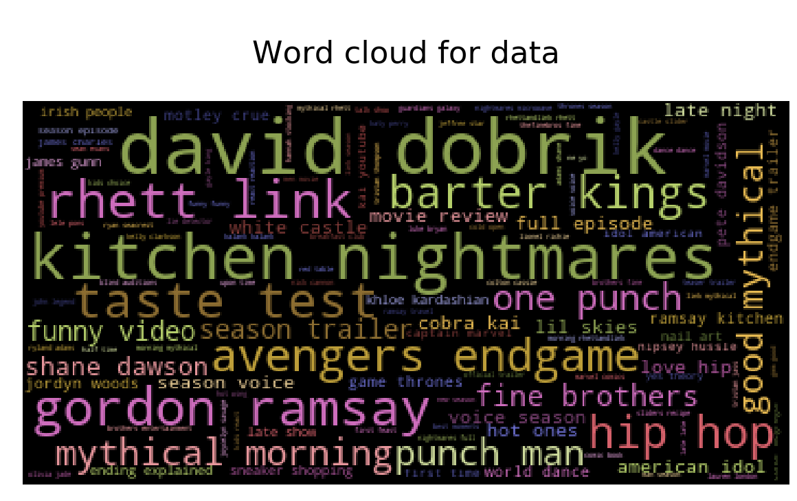

This is an exploration of the Youtube Trending data to find the most valuable channels and provides investors with business recommendations.
Table of Contents
Introduction
1.Objective
YouTube nowadays is the largest video hosting website, and it has profound influences on US society in all aspects. Thus analyzing of youtube’s dataset become significant for companies to analyze the social trends and make a prediction for future strategic business plannings.
The overall objective is for investors and advertisers. We will provide business recommendations for them, like which channels have more business value, what people are concerning now, and how to target customers precisely and explore potential customers,etc.
For the strategic decisions of investors, we will help them find the category that have relatively higher business potential. We drafted four judgment criterias, which are the number of videos in each category, the engagement rate (comment_count/view_count), the popularity rate (likes/view_count), and the average growth rate of showing up in trending, then there will be a weight value be assigned to those criterias.
For advertisers, we help them predict what elements will become popular,and four drafted judgment criterias include the changing rate of the frequency a channel on the trending board. The goal is that advertiser can choose to sign contract with these channel to make profit. In addition, they can choose these channels/YouTubers to see if they match the characteristics of their products and find potential customers. For example, we find that ‘Billie Eilish’ goes on trending every day this month, so we look up this channel, and found that is the most potential and popular new star in the U.S, who contains very strong and unique personal style. This information will bring up a very clear target customer for some business, like clothing buyers who can recommend similar style colthes to these audience.
2. Data description
In order to get the data from youtube, we registered google developer account that we can have access to Google APIs. Then we used a script, which is downloaded from GitHub: https://github.com/DataSnaek/Trending-YouTube-Scraper, to collect data. This youtube scraper can scrape the most trending video from different countries, however, we will mainly focus on the US trending videos based on the data we collected through March and April 2019. We are collecting the data day by day and each day the data file we saved contains 200 records. There are about 4000+ observations with 20+ CSV files so far. Our sample dataset has 15 columns, which include:
Video_id: the unique identity of a video
Trending_date: the date that video is ranked
Title: the title of video of the video
Channel_title: the title of the channel which the video belongs to
Category_id: the category of video, which can be looked up using the included JSON files
Publish_time: the time video was published
Tags: the tags a video contains
Views: the number of views each video have
Likes: the number of like each video have
Dislikes: the number of dislikes each video have
Comment_count: the number of comment each video have
Thumbnail_link: the link connected to the cover page
Comments_disabled: if people can leave comments or not
Ratings_disabled: if people can rate the video or not
Description: description of the video
Explore Data Analysis
1. Data Processing
First of all, we check the dataset and NAs, and there are several rows with only ‘video_id ’ exist but other columns show as NAs, so we simply delete these rows. Then there are still some NAs existing in ‘Description’ but that will not affect later analysis so we keep it in our dataset. In addition, in the dataset, we need to use an extra category_dictionary.json file to index the real category of each video. Then there are two columns have datetime value but not format as datetime, so we convert it to datetime.
1 | import numpy as np |
1 | # Load data and view general information of dataset |
<class 'pandas.core.frame.DataFrame'>
RangeIndex: 10021 entries, 0 to 10020
Data columns (total 16 columns):
video_id 10021 non-null object
title 10000 non-null object
publishedAt 10000 non-null object
channelId 10000 non-null object
channelTitle 10000 non-null object
categoryId 10000 non-null float64
trending_date 10000 non-null object
tags 10000 non-null object
view_count 10000 non-null float64
likes 10000 non-null float64
dislikes 10000 non-null float64
comment_count 10000 non-null float64
thumbnail_link 10000 non-null object
comments_disabled 10000 non-null object
ratings_disabled 10000 non-null object
description 9965 non-null object
dtypes: float64(5), object(11)
memory usage: 1.2+ MB| video_id | title | publishedAt | channelId | channelTitle | categoryId | trending_date | tags | view_count | likes | dislikes | comment_count | thumbnail_link | comments_disabled | ratings_disabled | description | |
|---|---|---|---|---|---|---|---|---|---|---|---|---|---|---|---|---|
| 0 | adzYW5DZoWs | Star Wars: The Rise of Skywalker – Teaser | 2019-04-12T17:08:15.000Z | UCZGYJFUizSax-yElQaFDp5Q | Star Wars | 24.0 | 19.14.04 | Star Wars|Lucasfilm|Star Wars: Episode IX|JJ A... | 17494243.0 | 429969.0 | 51877.0 | 71884.0 | https://i.ytimg.com/vi/adzYW5DZoWs/default.jpg | False | False | Every generation has a legend. Watch the brand... |
| 1 | 0GLbwkfhYZk | Star Wars Jedi: Fallen Order — Official Reveal... | 2019-04-13T18:41:22.000Z | UCOsVSkmXD1tc6uiJ2hc0wYQ | EA Star Wars | 20.0 | 19.14.04 | Star Wars Jedi Fallen Order|Star Wars|Star War... | 2125167.0 | 101509.0 | 3809.0 | 15366.0 | https://i.ytimg.com/vi/0GLbwkfhYZk/default.jpg | False | False | Cal Kestis—one of the last surviving members o... |
| 2 | QuderoyWqII | Magic Star ⭐ Concealer & Setting Powder Reveal... | 2019-04-12T19:00:59.000Z | UCkvK_5omS-42Ovgah8KRKtg | jeffreestar | 26.0 | 19.14.04 | jeffree star|jeffree star concealer|magic star... | 5373596.0 | 289698.0 | 8386.0 | 36440.0 | https://i.ytimg.com/vi/QuderoyWqII/default.jpg | False | False | The Magic Star™ Concealer & Setting Powder lau... |
| 3 | XsX3ATc3FbA | BTS (방탄소년단) '작은 것들을 위한 시 (Boy With Luv) feat. ... | 2019-04-12T09:00:02.000Z | UC3IZKseVpdzPSBaWxBxundA | ibighit | 10.0 | 19.14.04 | BIGHIT|빅히트|방탄소년단|BTS|BANGTAN|방탄|작은 것들을 위한 시|Bo... | 108445779.0 | 7597407.0 | 280945.0 | 2605772.0 | https://i.ytimg.com/vi/XsX3ATc3FbA/default.jpg | False | False | BTS (방탄소년단) '작은 것들을 위한 시 (Boy With Luv) feat. ... |
| 4 | -9txATEWXTQ | THE TRUTH... My Crush Does My Makeup | 2019-04-12T19:10:06.000Z | UCucot-Zp428OwkyRm2I7v2Q | James Charles | 24.0 | 19.14.04 | james|james charles|makeup artist|mua|covergir... | 5721920.0 | 361039.0 | 9842.0 | 32205.0 | https://i.ytimg.com/vi/-9txATEWXTQ/default.jpg | False | False | HI SISTERS! In today's video, I wanted to fina... |
For videos whose view_count is recorded as 0, we found that all the videos required a Youtube premium account to view, so we can not access their views. For videos whose likes and dislikes are recorded as 0, we found that their channels disabled rating so that their likes can not be seen. For videos whose comment_count is recorded as 0, we found that their channels also disabled comment.
As a result, we will exclude the 0 values in our following analysis on those variables.
1 | # Overview of nan values |
video_id 0
title 21
publishedAt 21
channelId 21
channelTitle 21
categoryId 21
trending_date 21
tags 21
view_count 21
likes 21
dislikes 21
comment_count 21
thumbnail_link 21
comments_disabled 21
ratings_disabled 21
description 24
dtype: int641 | # Drop all nan value in video identifers |
1 | # Pair the category id with category title |
1 | # Reformat the date and time columns |
1 | # General view of the four numeric attributes |
| view_count | likes | dislikes | comment_count | |
|---|---|---|---|---|
| count | 1.000000e+04 | 1.000000e+04 | 10000.000000 | 1.000000e+04 |
| mean | 3.427541e+06 | 1.376545e+05 | 5037.541800 | 1.550961e+04 |
| std | 8.122748e+06 | 3.933908e+05 | 19400.530075 | 9.185268e+04 |
| min | 0.000000e+00 | 0.000000e+00 | 0.000000 | 0.000000e+00 |
| 25% | 6.605620e+05 | 1.689550e+04 | 441.000000 | 2.041750e+03 |
| 50% | 1.225098e+06 | 4.060200e+04 | 1012.000000 | 4.484000e+03 |
| 75% | 2.905308e+06 | 1.149535e+05 | 2812.000000 | 1.085350e+04 |
| max | 1.954890e+08 | 9.079935e+06 | 446188.000000 | 3.121651e+06 |
There are some ‘0’s between these numeric variables, but in general thses cannot be 0, so we will check what happen to them.
1 | data.loc[(data['view_count'] ==0) | (data['likes'] ==0)|(data['dislikes'] ==0)|(data['comment_count'] ==0) ] |
| video_id | title | publishedAt | channelId | channelTitle | categoryId | trending_date | tags | view_count | likes | dislikes | comment_count | thumbnail_link | comments_disabled | ratings_disabled | description | category | |
|---|---|---|---|---|---|---|---|---|---|---|---|---|---|---|---|---|---|
| 181 | cHs1ffWg8-E | pregnancy + hope | shawn johnson + andrew east | 2019-04-04 14:00:14+00:00 | UCJ15Zl-v8-ghTgEOTpxHdGw | Shawn Johnson East | 22.0 | 2019-04-14 | shawn johnson|shawn johnson official|andrew ea... | 1031583.0 | 40024.0 | 439.0 | 0.0 | https://i.ytimg.com/vi/cHs1ffWg8-E/default.jpg | True | False | Subscribe to follow our journey ▶ http://bit.l... | People & Blogs |
| 187 | CcCRs0Ic3FI | The Boy Band Con: The Lou Pearlman Story | 2019-04-03 13:00:19+00:00 | UCqVDpXKLmKeBU_yyt_QkItQ | YouTube Originals | 1.0 | 2019-04-14 | *NSync|Backstreet Boys|Justin Timberlake|Lance... | 0.0 | 0.0 | 0.0 | 2620.0 | https://i.ytimg.com/vi/CcCRs0Ic3FI/default.jpg | False | True | The Boy Band Con: The Lou Pearlman Story is a ... | Film & Animation |
| 272 | JLE228ZuGGA | Apple Card Design | 2019-03-27 22:14:00+00:00 | UCE_M8A5yxnLfW0KghEeajjw | Apple | 28.0 | 2019-03-31 | Apple|iphone|apple card|credit card|applecard|... | 705756.0 | 27621.0 | 3001.0 | 0.0 | https://i.ytimg.com/vi/JLE228ZuGGA/default.jpg | True | False | This is Apple Card. Titanium, laser-etched, no... | Science & Technology |
| 334 | DPvMPvUhc6E | TRYING ON MY MOMS WEDDING DRESS AND PROM DRESSES | 2019-03-24 12:00:01+00:00 | UCRPIJ_-fU0fycIi4a6PUXRg | The LeRoys | 22.0 | 2019-03-31 | THE LEROYS|the leyroys|kesley leroy|shanna ler... | 657161.0 | 12895.0 | 550.0 | 0.0 | https://i.ytimg.com/vi/DPvMPvUhc6E/default.jpg | True | False | To shop mine and Kesley's outfits : https://th... | People & Blogs |
| 378 | ZV7MMQNVnEg | S2E2: Splits | 2019-03-21 00:57:20+00:00 | UCkM3cLfmWBSFoEU-xVnQ-dw | Step Up: High Water | 24.0 | 2019-03-31 | Step Up|Step Up: High Water|Naya Rivera|Ne-Yo|... | 0.0 | 8443.0 | 549.0 | 790.0 | https://i.ytimg.com/vi/ZV7MMQNVnEg/default.jpg | False | False | The budding rivalry between Tal and Zo comes t... | Entertainment |
| 402 | KiYh4tpzPRQ | Coachella 2019 Curated LIVE | 2019-03-28 05:05:51+00:00 | UCHF66aWLOxBW4l6VkSrS3cQ | Coachella | 10.0 | 2019-04-21 | [none] | 0.0 | 133117.0 | 26404.0 | 0.0 | https://i.ytimg.com/vi/KiYh4tpzPRQ/default_liv... | False | False | Coachella keeps the cameras rolling on Weekend... | Music |
| 425 | nriddSJoT5c | BTS(방탄소년단)-Dionysus [Music Bank COME BACK/2019... | 2019-04-19 09:21:34+00:00 | UC5BMQOsAB8hKUyHu9KI6yig | KBS World TV | 24.0 | 2019-04-21 | kbs|kbsworld|kbs world|kbs world tv|kbs drama|... | 2713211.0 | 0.0 | 0.0 | 12085.0 | https://i.ytimg.com/vi/nriddSJoT5c/default.jpg | False | True | ▶Subscribe KBS World Official PagesYoutube Sub... | Entertainment |
| 480 | GJplzhhvWvw | S8E2 Preview Trailer Breakdown! - Game of Thro... | 2019-04-17 11:00:14+00:00 | UC-x4iL-dib6tLIfSD4orfQw | Talking Thrones | 24.0 | 2019-04-21 | Game of Thrones Season 8|Game of Thrones Seaso... | 660271.0 | 0.0 | 0.0 | 3701.0 | https://i.ytimg.com/vi/GJplzhhvWvw/default.jpg | False | True | Welcome back for my Game of Thrones Season 8 E... | Entertainment |
| 534 | b7eror7JG2Y | Comedian Kojo gets Simon's GOLDEN BUZZER | Aud... | 2019-04-13 20:21:01+00:00 | UCUtZaxDF3hD5VK4xRYFBePQ | Britain's Got Talent | 24.0 | 2019-04-21 | britain's got talent|britains got talent|brita... | 13081392.0 | 298217.0 | 12106.0 | 0.0 | https://i.ytimg.com/vi/b7eror7JG2Y/default.jpg | True | False | See more from Britain's Got Talent at http://i... | Entertainment |
| 697 | Es2lmv_wJnY | Devin Shares Her Sexual Assault Story • Ladylike | 2019-04-28 15:00:02+00:00 | UCcOeS5aEIadAhKtJ9_VKAIw | Ladylike | 22.0 | 2019-05-03 | buzzfeed|buzzfeed ladylike|ladylike|buzzfeed d... | 1919818.0 | 174892.0 | 3060.0 | 0.0 | https://i.ytimg.com/vi/Es2lmv_wJnY/default.jpg | True | False | Please use the resources listed in the video a... | People & Blogs |
| 716 | M2D7JarYBmA | Ten-year-old Giorgia gets Alesha's GOLDEN BUZZ... | 2019-04-27 20:13:59+00:00 | UCUtZaxDF3hD5VK4xRYFBePQ | Britain's Got Talent | 24.0 | 2019-05-03 | britain's got talent|britains got talent|brita... | 5758423.0 | 107559.0 | 4069.0 | 0.0 | https://i.ytimg.com/vi/M2D7JarYBmA/default.jpg | True | False | See more from Britain's Got Talent at http://i... | Entertainment |
| 777 | TgWKutWMT-o | Making My Own Starbucks Pinkity Drinkity | 2019-04-23 19:00:26+00:00 | UCucot-Zp428OwkyRm2I7v2Q | James Charles | 24.0 | 2019-05-03 | james|james charles|makeup artist|mua|covergir... | 11683411.0 | 0.0 | 0.0 | 67107.0 | https://i.ytimg.com/vi/TgWKutWMT-o/default.jpg | False | True | HI SISTERS! You all know that I am absolutely ... | Entertainment |
| 945 | JLE228ZuGGA | Apple Card Design | 2019-03-27 22:14:00+00:00 | UCE_M8A5yxnLfW0KghEeajjw | Apple | 28.0 | 2019-04-04 | Apple|iphone|apple card|credit card|applecard|... | 838679.0 | 31572.0 | 3266.0 | 0.0 | https://i.ytimg.com/vi/JLE228ZuGGA/default.jpg | True | False | This is Apple Card. Titanium, laser-etched, no... | Science & Technology |
| 989 | DPvMPvUhc6E | TRYING ON MY MOMS WEDDING DRESS AND PROM DRESSES | 2019-03-24 12:00:01+00:00 | UCRPIJ_-fU0fycIi4a6PUXRg | The LeRoys | 22.0 | 2019-04-04 | THE LEROYS|the leyroys|kesley leroy|shanna ler... | 680115.0 | 13157.0 | 555.0 | 0.0 | https://i.ytimg.com/vi/DPvMPvUhc6E/default.jpg | True | False | To shop mine and Kesley's outfits : https://th... | People & Blogs |
| 1088 | EqFQMOkviYQ | S8E3 Preview: The Main Event! - Game of Throne... | 2019-04-22 01:55:31+00:00 | UC-x4iL-dib6tLIfSD4orfQw | Talking Thrones | 24.0 | 2019-04-25 | Game of Thrones Season 8|Game of Thrones Seaso... | 991396.0 | 0.0 | 0.0 | 5224.0 | https://i.ytimg.com/vi/EqFQMOkviYQ/default.jpg | False | True | Welcome back for my Game of Thrones Season 8 E... | Entertainment |
| 1115 | _x6UM6I5jjA | INCREDIBLE Akshat Singh dances his way to Ant ... | 2019-04-20 19:59:41+00:00 | UCUtZaxDF3hD5VK4xRYFBePQ | Britain's Got Talent | 24.0 | 2019-04-25 | britain's got talent|britains got talent|brita... | 6054468.0 | 130006.0 | 9725.0 | 0.0 | https://i.ytimg.com/vi/_x6UM6I5jjA/default.jpg | True | False | Akshat's motto is to be happy and make others ... | Entertainment |
| 1142 | nriddSJoT5c | BTS(방탄소년단)-Dionysus [Music Bank COME BACK/2019... | 2019-04-19 09:21:34+00:00 | UC5BMQOsAB8hKUyHu9KI6yig | KBS World TV | 24.0 | 2019-04-25 | kbs|kbsworld|kbs world|kbs world tv|kbs drama|... | 2989419.0 | 0.0 | 0.0 | 12395.0 | https://i.ytimg.com/vi/nriddSJoT5c/default.jpg | False | True | ▶Subscribe KBS World Official PagesYoutube Sub... | Entertainment |
| 1293 | fIikiid_WYQ | 14 year old singer Iveta gets Michelle's Golde... | 2019-03-16 20:10:00+00:00 | UCIBHwinVPgVmIRiFJdX40fA | Ireland's Got Talent | 24.0 | 2019-03-21 | Gottalentirl|Singing|Dancing|Got talent|Irelan... | 2226583.0 | 27569.0 | 883.0 | 0.0 | https://i.ytimg.com/vi/fIikiid_WYQ/default.jpg | True | False | 14 year old singer Iveta wowed the crowd with ... | Entertainment |
| 1331 | -eUmis7uko0 | Multiple fatalities in shooting at Christchurc... | 2019-03-15 03:15:03+00:00 | UCVgO39Bk5sMo66-6o6Spn6Q | ABC News (Australia) | 25.0 | 2019-03-21 | Christchurc|NZ|New Zealand|shooting|terrorist ... | 1140483.0 | 4225.0 | 1053.0 | 0.0 | https://i.ytimg.com/vi/-eUmis7uko0/default.jpg | True | False | Multiple people are dead and one person is in ... | News & Politics |
| 1515 | cHs1ffWg8-E | pregnancy + hope | shawn johnson + andrew east | 2019-04-04 14:00:14+00:00 | UCJ15Zl-v8-ghTgEOTpxHdGw | Shawn Johnson East | 22.0 | 2019-04-10 | shawn johnson|shawn johnson official|andrew ea... | 992688.0 | 39289.0 | 434.0 | 0.0 | https://i.ytimg.com/vi/cHs1ffWg8-E/default.jpg | True | False | Subscribe to follow our journey ▶ http://bit.l... | People & Blogs |
| 1526 | CcCRs0Ic3FI | The Boy Band Con: The Lou Pearlman Story | 2019-04-03 13:00:19+00:00 | UCqVDpXKLmKeBU_yyt_QkItQ | YouTube Originals | 1.0 | 2019-04-10 | *NSync|Backstreet Boys|Justin Timberlake|Lance... | 0.0 | 0.0 | 0.0 | 2303.0 | https://i.ytimg.com/vi/CcCRs0Ic3FI/default.jpg | False | True | The Boy Band Con: The Lou Pearlman Story is a ... | Film & Animation |
| 1749 | vsyDxvMMMYA | Official Season 8 Trailer Explained! - Game of... | 2019-03-06 00:33:28+00:00 | UC-x4iL-dib6tLIfSD4orfQw | Talking Thrones | 24.0 | 2019-03-14 | Game of Thrones Season 8|Game of Thrones Seaso... | 995140.0 | 0.0 | 0.0 | 5610.0 | https://i.ytimg.com/vi/vsyDxvMMMYA/default.jpg | False | True | Welcome back for the official Game of Thrones ... | Entertainment |
| 1863 | JLE228ZuGGA | Apple Card Design | 2019-03-27 22:14:00+00:00 | UCE_M8A5yxnLfW0KghEeajjw | Apple | 28.0 | 2019-03-30 | Apple|iphone|apple card|credit card|applecard|... | 690601.0 | 27298.0 | 2962.0 | 0.0 | https://i.ytimg.com/vi/JLE228ZuGGA/default.jpg | True | False | This is Apple Card. Titanium, laser-etched, no... | Science & Technology |
| 1928 | DPvMPvUhc6E | TRYING ON MY MOMS WEDDING DRESS AND PROM DRESSES | 2019-03-24 12:00:01+00:00 | UCRPIJ_-fU0fycIi4a6PUXRg | The LeRoys | 22.0 | 2019-03-30 | THE LEROYS|the leyroys|kesley leroy|shanna ler... | 651474.0 | 12846.0 | 548.0 | 0.0 | https://i.ytimg.com/vi/DPvMPvUhc6E/default.jpg | True | False | To shop mine and Kesley's outfits : https://th... | People & Blogs |
| 1972 | ZV7MMQNVnEg | S2E2: Splits | 2019-03-21 00:57:20+00:00 | UCkM3cLfmWBSFoEU-xVnQ-dw | Step Up: High Water | 24.0 | 2019-03-30 | Step Up|Step Up: High Water|Naya Rivera|Ne-Yo|... | 0.0 | 8369.0 | 544.0 | 788.0 | https://i.ytimg.com/vi/ZV7MMQNVnEg/default.jpg | False | False | The budding rivalry between Tal and Zo comes t... | Entertainment |
| 2004 | b7eror7JG2Y | Comedian Kojo gets Simon's GOLDEN BUZZER | Aud... | 2019-04-13 20:21:01+00:00 | UCUtZaxDF3hD5VK4xRYFBePQ | Britain's Got Talent | 24.0 | 2019-04-15 | britain's got talent|britains got talent|brita... | 3995647.0 | 115324.0 | 3998.0 | 0.0 | https://i.ytimg.com/vi/b7eror7JG2Y/default.jpg | True | False | See more from Britain's Got Talent at http://i... | Entertainment |
| 2291 | vsyDxvMMMYA | Official Season 8 Trailer Explained! - Game of... | 2019-03-06 00:33:28+00:00 | UC-x4iL-dib6tLIfSD4orfQw | Talking Thrones | 24.0 | 2019-03-11 | Game of Thrones Season 8|Game of Thrones Seaso... | 953966.0 | 0.0 | 0.0 | 5526.0 | https://i.ytimg.com/vi/vsyDxvMMMYA/default.jpg | False | True | Welcome back for the official Game of Thrones ... | Entertainment |
| 2350 | 3rx0m0Ft7Qg | Jordyn Woods Gives First Interview Since Cheat... | 2019-03-01 20:32:26+00:00 | UCjDsbbzHgTrGc4Ff26TJtsA | E! News | 24.0 | 2019-03-11 | Top Stories|Khloe Kardashian|Tristan Thompson|... | 823173.0 | 0.0 | 0.0 | 1657.0 | https://i.ytimg.com/vi/3rx0m0Ft7Qg/default.jpg | False | True | The model opens up on Red Table Talk and tells... | Entertainment |
| 2372 | QpNmhz_g5hk | Hopsin - The Old Us | 2019-02-27 21:13:42+00:00 | UCvlJkDfgfG3J38pup6lvrPg | Hopsintv | 10.0 | 2019-03-11 | rap|hiphop|independent|rapper|hopsin|hopsintv|... | 2495122.0 | 158546.0 | 2822.0 | 0.0 | https://i.ytimg.com/vi/QpNmhz_g5hk/default.jpg | True | False | Director: HopsinProducer: Moses IsraelProd. Co... | Music |
| 2483 | JLE228ZuGGA | Apple Card Design | 2019-03-27 22:14:00+00:00 | UCE_M8A5yxnLfW0KghEeajjw | Apple | 28.0 | 2019-04-01 | Apple|iphone|apple card|credit card|applecard|... | 741632.0 | 28636.0 | 3066.0 | 0.0 | https://i.ytimg.com/vi/JLE228ZuGGA/default.jpg | True | False | This is Apple Card. Titanium, laser-etched, no... | Science & Technology |
| ... | ... | ... | ... | ... | ... | ... | ... | ... | ... | ... | ... | ... | ... | ... | ... | ... | ... |
| 7911 | 3rx0m0Ft7Qg | Jordyn Woods Gives First Interview Since Cheat... | 2019-03-01 20:32:26+00:00 | UCjDsbbzHgTrGc4Ff26TJtsA | E! News | 24.0 | 2019-03-07 | Top Stories|Khloe Kardashian|Tristan Thompson|... | 819481.0 | 0.0 | 0.0 | 1653.0 | https://i.ytimg.com/vi/3rx0m0Ft7Qg/default.jpg | False | True | The model opens up on Red Table Talk and tells... | Entertainment |
| 7941 | QpNmhz_g5hk | Hopsin - The Old Us | 2019-02-27 21:13:42+00:00 | UCvlJkDfgfG3J38pup6lvrPg | Hopsintv | 10.0 | 2019-03-07 | rap|hiphop|independent|rapper|hopsin|hopsintv|... | 1853291.0 | 135536.0 | 2357.0 | 0.0 | https://i.ytimg.com/vi/QpNmhz_g5hk/default.jpg | True | False | Director: HopsinProducer: Moses IsraelProd. Co... | Music |
| 8135 | JLE228ZuGGA | Apple Card Design | 2019-03-27 22:14:00+00:00 | UCE_M8A5yxnLfW0KghEeajjw | Apple | 28.0 | 2019-04-03 | Apple|iphone|apple card|credit card|applecard|... | 806157.0 | 30644.0 | 3196.0 | 0.0 | https://i.ytimg.com/vi/JLE228ZuGGA/default.jpg | True | False | This is Apple Card. Titanium, laser-etched, no... | Science & Technology |
| 8182 | DPvMPvUhc6E | TRYING ON MY MOMS WEDDING DRESS AND PROM DRESSES | 2019-03-24 12:00:01+00:00 | UCRPIJ_-fU0fycIi4a6PUXRg | The LeRoys | 22.0 | 2019-04-03 | THE LEROYS|the leyroys|kesley leroy|shanna ler... | 677530.0 | 13127.0 | 554.0 | 0.0 | https://i.ytimg.com/vi/DPvMPvUhc6E/default.jpg | True | False | To shop mine and Kesley's outfits : https://th... | People & Blogs |
| 8261 | b7eror7JG2Y | Comedian Kojo gets Simon's GOLDEN BUZZER | Aud... | 2019-04-13 20:21:01+00:00 | UCUtZaxDF3hD5VK4xRYFBePQ | Britain's Got Talent | 24.0 | 2019-04-17 | britain's got talent|britains got talent|brita... | 10327361.0 | 254059.0 | 10001.0 | 0.0 | https://i.ytimg.com/vi/b7eror7JG2Y/default.jpg | True | False | See more from Britain's Got Talent at http://i... | Entertainment |
| 8406 | Es2lmv_wJnY | Devin Shares Her Sexual Assault Story • Ladylike | 2019-04-28 15:00:02+00:00 | UCcOeS5aEIadAhKtJ9_VKAIw | Ladylike | 22.0 | 2019-04-29 | buzzfeed|buzzfeed ladylike|ladylike|buzzfeed d... | 815016.0 | 102647.0 | 1199.0 | 0.0 | https://i.ytimg.com/vi/Es2lmv_wJnY/default.jpg | True | False | Please use the resources listed in the video a... | People & Blogs |
| 8415 | M2D7JarYBmA | Ten-year-old Giorgia gets Alesha's GOLDEN BUZZ... | 2019-04-27 20:13:59+00:00 | UCUtZaxDF3hD5VK4xRYFBePQ | Britain's Got Talent | 24.0 | 2019-04-29 | britain's got talent|britains got talent|brita... | 3500734.0 | 78342.0 | 2915.0 | 0.0 | https://i.ytimg.com/vi/M2D7JarYBmA/default.jpg | True | False | See more from Britain's Got Talent at http://i... | Entertainment |
| 8496 | TgWKutWMT-o | Making My Own Starbucks Pinkity Drinkity | 2019-04-23 19:00:26+00:00 | UCucot-Zp428OwkyRm2I7v2Q | James Charles | 24.0 | 2019-04-29 | james|james charles|makeup artist|mua|covergir... | 11133229.0 | 0.0 | 0.0 | 63410.0 | https://i.ytimg.com/vi/TgWKutWMT-o/default.jpg | False | True | HI SISTERS! You all know that I am absolutely ... | Entertainment |
| 8547 | EqFQMOkviYQ | S8E3 Preview: The Main Event! - Game of Throne... | 2019-04-22 01:55:31+00:00 | UC-x4iL-dib6tLIfSD4orfQw | Talking Thrones | 24.0 | 2019-04-29 | Game of Thrones Season 8|Game of Thrones Seaso... | 1064483.0 | 0.0 | 0.0 | 5370.0 | https://i.ytimg.com/vi/EqFQMOkviYQ/default.jpg | False | True | Welcome back for my Game of Thrones Season 8 E... | Entertainment |
| 8589 | nriddSJoT5c | BTS(방탄소년단)-Dionysus [Music Bank COME BACK/2019... | 2019-04-19 09:21:34+00:00 | UC5BMQOsAB8hKUyHu9KI6yig | KBS World TV | 24.0 | 2019-04-29 | kbs|kbsworld|kbs world|kbs world tv|kbs drama|... | 3132013.0 | 0.0 | 0.0 | 12508.0 | https://i.ytimg.com/vi/nriddSJoT5c/default.jpg | False | True | ▶Subscribe KBS World Official PagesYoutube Sub... | Entertainment |
| 8739 | vsyDxvMMMYA | Official Season 8 Trailer Explained! - Game of... | 2019-03-06 00:33:28+00:00 | UC-x4iL-dib6tLIfSD4orfQw | Talking Thrones | 24.0 | 2019-03-13 | Game of Thrones Season 8|Game of Thrones Seaso... | 980209.0 | 0.0 | 0.0 | 5571.0 | https://i.ytimg.com/vi/vsyDxvMMMYA/default.jpg | False | True | Welcome back for the official Game of Thrones ... | Entertainment |
| 8790 | 3rx0m0Ft7Qg | Jordyn Woods Gives First Interview Since Cheat... | 2019-03-01 20:32:26+00:00 | UCjDsbbzHgTrGc4Ff26TJtsA | E! News | 24.0 | 2019-03-13 | Top Stories|Khloe Kardashian|Tristan Thompson|... | 823627.0 | 0.0 | 0.0 | 1655.0 | https://i.ytimg.com/vi/3rx0m0Ft7Qg/default.jpg | False | True | The model opens up on Red Table Talk and tells... | Entertainment |
| 8807 | QpNmhz_g5hk | Hopsin - The Old Us | 2019-02-27 21:13:42+00:00 | UCvlJkDfgfG3J38pup6lvrPg | Hopsintv | 10.0 | 2019-03-13 | rap|hiphop|independent|rapper|hopsin|hopsintv|... | 2717940.0 | 163902.0 | 2942.0 | 0.0 | https://i.ytimg.com/vi/QpNmhz_g5hk/default.jpg | True | False | Director: HopsinProducer: Moses IsraelProd. Co... | Music |
| 8894 | cHs1ffWg8-E | pregnancy + hope | shawn johnson + andrew east | 2019-04-04 14:00:14+00:00 | UCJ15Zl-v8-ghTgEOTpxHdGw | Shawn Johnson East | 22.0 | 2019-04-08 | shawn johnson|shawn johnson official|andrew ea... | 954169.0 | 38333.0 | 423.0 | 0.0 | https://i.ytimg.com/vi/cHs1ffWg8-E/default.jpg | True | False | Subscribe to follow our journey ▶ http://bit.l... | People & Blogs |
| 8904 | CcCRs0Ic3FI | The Boy Band Con: The Lou Pearlman Story | 2019-04-03 13:00:19+00:00 | UCqVDpXKLmKeBU_yyt_QkItQ | YouTube Originals | 1.0 | 2019-04-08 | *NSync|Backstreet Boys|Justin Timberlake|Lance... | 0.0 | 0.0 | 0.0 | 2091.0 | https://i.ytimg.com/vi/CcCRs0Ic3FI/default.jpg | False | True | The Boy Band Con: The Lou Pearlman Story is a ... | Film & Animation |
| 9073 | vsyDxvMMMYA | Official Season 8 Trailer Explained! - Game of... | 2019-03-06 00:33:28+00:00 | UC-x4iL-dib6tLIfSD4orfQw | Talking Thrones | 24.0 | 2019-03-08 | Game of Thrones Season 8|Game of Thrones Seaso... | 832493.0 | 0.0 | 0.0 | 5300.0 | https://i.ytimg.com/vi/vsyDxvMMMYA/default.jpg | False | True | Welcome back for the official Game of Thrones ... | Entertainment |
| 9143 | 3rx0m0Ft7Qg | Jordyn Woods Gives First Interview Since Cheat... | 2019-03-01 20:32:26+00:00 | UCjDsbbzHgTrGc4Ff26TJtsA | E! News | 24.0 | 2019-03-08 | Top Stories|Khloe Kardashian|Tristan Thompson|... | 821807.0 | 0.0 | 0.0 | 1653.0 | https://i.ytimg.com/vi/3rx0m0Ft7Qg/default.jpg | False | True | The model opens up on Red Table Talk and tells... | Entertainment |
| 9170 | QpNmhz_g5hk | Hopsin - The Old Us | 2019-02-27 21:13:42+00:00 | UCvlJkDfgfG3J38pup6lvrPg | Hopsintv | 10.0 | 2019-03-08 | rap|hiphop|independent|rapper|hopsin|hopsintv|... | 2090298.0 | 145988.0 | 2554.0 | 0.0 | https://i.ytimg.com/vi/QpNmhz_g5hk/default.jpg | True | False | Director: HopsinProducer: Moses IsraelProd. Co... | Music |
| 9255 | JLE228ZuGGA | Apple Card Design | 2019-03-27 22:14:00+00:00 | UCE_M8A5yxnLfW0KghEeajjw | Apple | 28.0 | 2019-03-29 | Apple|iphone|apple card|credit card|applecard|... | 566465.0 | 25222.0 | 2367.0 | 0.0 | https://i.ytimg.com/vi/JLE228ZuGGA/default.jpg | True | False | This is Apple Card. Titanium, laser-etched, no... | Science & Technology |
| 9333 | DPvMPvUhc6E | TRYING ON MY MOMS WEDDING DRESS AND PROM DRESSES | 2019-03-24 12:00:01+00:00 | UCRPIJ_-fU0fycIi4a6PUXRg | The LeRoys | 22.0 | 2019-03-29 | THE LEROYS|the leyroys|kesley leroy|shanna ler... | 632035.0 | 12608.0 | 541.0 | 0.0 | https://i.ytimg.com/vi/DPvMPvUhc6E/default.jpg | True | False | To shop mine and Kesley's outfits : https://th... | People & Blogs |
| 9380 | ZV7MMQNVnEg | S2E2: Splits | 2019-03-21 00:57:20+00:00 | UCkM3cLfmWBSFoEU-xVnQ-dw | Step Up: High Water | 24.0 | 2019-03-29 | Step Up|Step Up: High Water|Naya Rivera|Ne-Yo|... | 0.0 | 8079.0 | 509.0 | 759.0 | https://i.ytimg.com/vi/ZV7MMQNVnEg/default.jpg | False | False | The budding rivalry between Tal and Zo comes t... | Entertainment |
| 9435 | fIikiid_WYQ | 14 year old singer Iveta gets Michelle's Golde... | 2019-03-16 20:10:00+00:00 | UCIBHwinVPgVmIRiFJdX40fA | Ireland's Got Talent | 24.0 | 2019-03-17 | Gottalentirl|Singing|Dancing|Got talent|Irelan... | 691253.0 | 13148.0 | 291.0 | 0.0 | https://i.ytimg.com/vi/fIikiid_WYQ/default.jpg | True | False | 14 year old singer Iveta wowed the crowd with ... | Entertainment |
| 9469 | -eUmis7uko0 | Multiple fatalities in shooting at Christchurc... | 2019-03-15 03:15:03+00:00 | UCVgO39Bk5sMo66-6o6Spn6Q | ABC News (Australia) | 25.0 | 2019-03-17 | Christchurc|NZ|New Zealand|shooting|terrorist ... | 1086437.0 | 4086.0 | 1009.0 | 0.0 | https://i.ytimg.com/vi/-eUmis7uko0/default.jpg | True | False | Multiple people are dead and one person is in ... | News & Politics |
| 9601 | vsyDxvMMMYA | Official Season 8 Trailer Explained! - Game of... | 2019-03-06 00:33:28+00:00 | UC-x4iL-dib6tLIfSD4orfQw | Talking Thrones | 24.0 | 2019-03-17 | Game of Thrones Season 8|Game of Thrones Seaso... | 1005501.0 | 0.0 | 0.0 | 5644.0 | https://i.ytimg.com/vi/vsyDxvMMMYA/default.jpg | False | True | Welcome back for the official Game of Thrones ... | Entertainment |
| 9676 | cHs1ffWg8-E | pregnancy + hope | shawn johnson + andrew east | 2019-04-04 14:00:14+00:00 | UCJ15Zl-v8-ghTgEOTpxHdGw | Shawn Johnson East | 22.0 | 2019-04-07 | shawn johnson|shawn johnson official|andrew ea... | 935007.0 | 37852.0 | 421.0 | 0.0 | https://i.ytimg.com/vi/cHs1ffWg8-E/default.jpg | True | False | Subscribe to follow our journey ▶ http://bit.l... | People & Blogs |
| 9685 | CcCRs0Ic3FI | The Boy Band Con: The Lou Pearlman Story | 2019-04-03 13:00:19+00:00 | UCqVDpXKLmKeBU_yyt_QkItQ | YouTube Originals | 1.0 | 2019-04-07 | *NSync|Backstreet Boys|Justin Timberlake|Lance... | 0.0 | 0.0 | 0.0 | 2001.0 | https://i.ytimg.com/vi/CcCRs0Ic3FI/default.jpg | False | True | The Boy Band Con: The Lou Pearlman Story is a ... | Film & Animation |
| 9810 | JLE228ZuGGA | Apple Card Design | 2019-03-27 22:14:00+00:00 | UCE_M8A5yxnLfW0KghEeajjw | Apple | 28.0 | 2019-04-07 | Apple|iphone|apple card|credit card|applecard|... | 912711.0 | 33467.0 | 3408.0 | 0.0 | https://i.ytimg.com/vi/JLE228ZuGGA/default.jpg | True | False | This is Apple Card. Titanium, laser-etched, no... | Science & Technology |
| 9862 | ZV7MMQNVnEg | S2E2: Splits | 2019-03-21 00:57:20+00:00 | UCkM3cLfmWBSFoEU-xVnQ-dw | Step Up: High Water | 24.0 | 2019-03-22 | Step Up|Step Up: High Water|Naya Rivera|Ne-Yo|... | 0.0 | 3652.0 | 190.0 | 384.0 | https://i.ytimg.com/vi/ZV7MMQNVnEg/default.jpg | False | False | The budding rivalry between Tal and Zo comes t... | Entertainment |
| 9959 | fIikiid_WYQ | 14 year old singer Iveta gets Michelle's Golde... | 2019-03-16 20:10:00+00:00 | UCIBHwinVPgVmIRiFJdX40fA | Ireland's Got Talent | 24.0 | 2019-03-22 | Gottalentirl|Singing|Dancing|Got talent|Irelan... | 2504293.0 | 31030.0 | 982.0 | 0.0 | https://i.ytimg.com/vi/fIikiid_WYQ/default.jpg | True | False | 14 year old singer Iveta wowed the crowd with ... | Entertainment |
| 9993 | -eUmis7uko0 | Multiple fatalities in shooting at Christchurc... | 2019-03-15 03:15:03+00:00 | UCVgO39Bk5sMo66-6o6Spn6Q | ABC News (Australia) | 25.0 | 2019-03-22 | Christchurc|NZ|New Zealand|shooting|terrorist ... | 1138120.0 | 4235.0 | 1057.0 | 0.0 | https://i.ytimg.com/vi/-eUmis7uko0/default.jpg | True | False | Multiple people are dead and one person is in ... | News & Politics |
135 rows × 17 columns
2. Data Visualization
1 | # Vlsualize the correlation between view_count, likes,dislikes, and comment_count |

By simply plot the heatmap we can see the correlations between view_count, likes, dislikes, and comment_count. So it seems that increase in like contribute the most in increase comment_count. View_count and comment_count don’t have that strong correlation.
1 | # Plot the number of video by category |

Entertainment has the most video show up in the trending video, which is more than twice the second. This only can present that the majority group of videos are belong to entertainment, and the competition under entertainment channels may be very fierce. Then we would like to see the distribution of ‘view_count’, ‘likes’, ‘dislikes’, ‘comment_count’ by different categories.
1 | # Plot the distribution of 'view_count','likes','dislikes','comment_count' |
1 | plt.figure(figsize=(32,25)) |

1 | general_view=pd.DataFrame(data[['view_count','likes','dislikes','comment_count']].groupby(data['category']).mean()) |
1 | # The average of four numeric attributes |

1 | # Create evaluation matrix by mean of time interval, number of videos, average view count, standard deviation of view count |
1 | Matrix1 |
| interval_mean | video_count | view_mean | view_std | interval_mean_rank | video_count_rank | view_mean_rank | view_std_rank | score | |
|---|---|---|---|---|---|---|---|---|---|
| category | |||||||||
| Entertainment | 5.194910 | 2986 | 3.182532e+06 | 5.867944e+06 | 10.0 | 14.0 | 12.0 | 12.0 | 48.0 |
| Music | 6.103473 | 1382 | 9.802081e+06 | 1.743290e+07 | 1.0 | 13.0 | 14.0 | 14.0 | 42.0 |
| Sports | 4.680284 | 1126 | 1.479559e+06 | 2.928777e+06 | 14.0 | 12.0 | 7.0 | 9.0 | 42.0 |
| Film & Animation | 5.620229 | 524 | 4.703035e+06 | 8.137935e+06 | 4.0 | 8.0 | 13.0 | 13.0 | 38.0 |
| Howto & Style | 5.235650 | 662 | 1.607683e+06 | 1.951892e+06 | 9.0 | 10.0 | 8.0 | 7.0 | 34.0 |
| Comedy | 5.546512 | 860 | 2.144218e+06 | 2.302716e+06 | 5.0 | 11.0 | 9.0 | 8.0 | 33.0 |
| People & Blogs | 5.794545 | 550 | 2.538667e+06 | 3.283287e+06 | 3.0 | 9.0 | 10.0 | 10.0 | 32.0 |
| Science & Technology | 4.698073 | 467 | 1.475655e+06 | 1.508118e+06 | 13.0 | 7.0 | 6.0 | 5.0 | 31.0 |
| Gaming | 5.813149 | 289 | 2.728532e+06 | 3.520317e+06 | 2.0 | 3.0 | 11.0 | 11.0 | 27.0 |
| News & Politics | 4.995086 | 407 | 1.233553e+06 | 1.385904e+06 | 11.0 | 6.0 | 4.0 | 4.0 | 25.0 |
| Education | 5.451923 | 312 | 1.458778e+06 | 1.703183e+06 | 7.0 | 5.0 | 5.0 | 6.0 | 23.0 |
| Pets & Animals | 4.913043 | 23 | 6.665884e+05 | 2.772972e+05 | 12.0 | 1.0 | 1.0 | 2.0 | 16.0 |
| Autos & Vehicles | 5.538983 | 295 | 8.257867e+05 | 5.692492e+05 | 6.0 | 4.0 | 2.0 | 3.0 | 15.0 |
| Travel & Events | 5.333333 | 117 | 8.301829e+05 | 2.534363e+05 | 8.0 | 2.0 | 3.0 | 1.0 | 14.0 |
1 | plt.figure(figsize = (15,15)) |

By looking at the distribution of each attribute, we developed some insights:
some categories have obviously high variance, such as music, entertainments, film&Animation, etc. This present the variety of videos in these categories, which polarization is very serious. Oppositely, some categories have very condensed distribution, like travel, Pets & Animals, auto &vehicles. This may because these categories have smaller but more stable audience Sports got in the top three show up frequency on the last graph, but all four distributions are lower than others.
Pet also have the lowest view and number of video, but it shows more interactive between the audiences.
Comparing to the count view by category, which Entertainment has the highest value, Music becomes the top category on all four attributes based on the distributions, so this show that Entertainment may not be the most popular category, only because it has the largest video base so it can have so many videos go up on trending, but music gets the most attention from people. Since music is a very personal thing, so it shows a high ratio between likes and dislikes.
1 | #the distribution of days that videos take to become popular |
count 10000.000000
mean 5.356400
std 3.256354
min 0.000000
25% 3.000000
50% 5.000000
75% 8.000000
max 24.000000
Name: interval, dtype: float641 | #Histgram of distribution of interval |

1 | #Histgram of distribution of interval |

1 | # Average time interval between published and trending |

1 | plt.figure(figsize = (25,9)) |
The distribution of intervals between video’s publishing time and trending time shows that frequncy of interval incease to more than 500 when interval is 2days, and then decrease. We also found that if a video is older than half a month, generally, it can not appear on trending board.
1 | ##Top videoes whoes view_count/likes grow fatest among categories |
| channelTitle | growth_rate_view | ||
|---|---|---|---|
| category | title | ||
| Autos & Vehicles | Model Y Unveil | Tesla | 7.108547e+05 |
| Model Y Unveil | Tesla | 6.863875e+05 | |
| Model Y Unveil | Tesla | 6.026014e+05 | |
| Here's Why the 2019 BMW X7 Is the Best Big Luxury SUV | Doug DeMuro | 5.409695e+05 | |
| Model Y Unveil | Tesla | 5.373847e+05 | |
| The Saleen S7 Is the Craziest Supercar Nobody Knows About | Doug DeMuro | 5.163707e+05 | |
| The Saleen S7 Is the Craziest Supercar Nobody Knows About | Doug DeMuro | 4.721725e+05 | |
| Model Y Unveil | Tesla | 4.669276e+05 | |
| Model Y Unveil | Tesla | 4.177008e+05 | |
| The Saleen S7 Is the Craziest Supercar Nobody Knows About | Doug DeMuro | 4.139040e+05 | |
| Comedy | Maisie Williams Accidentally Drops a Major Spoiler in Game of Thrones' Final Season | The Tonight Show Starring Jimmy Fallon | 3.014781e+06 |
| Maisie Williams Accidentally Drops a Major Spoiler in Game of Thrones' Final Season | The Tonight Show Starring Jimmy Fallon | 2.615266e+06 | |
| The Spiders and the Bees | TheOdd1sOut | 2.510830e+06 | |
| The Spiders and the Bees | TheOdd1sOut | 2.428940e+06 | |
| The Spiders and the Bees | TheOdd1sOut | 2.378457e+06 | |
| The Spiders and the Bees | TheOdd1sOut | 2.252175e+06 | |
| The Spiders and the Bees | TheOdd1sOut | 2.215552e+06 | |
| The Spiders and the Bees | TheOdd1sOut | 2.157888e+06 | |
| The Spiders and the Bees | TheOdd1sOut | 2.006741e+06 | |
| A Tour Of My Plants | JennaMarbles | 1.877655e+06 | |
| Education | What If We Detonated All Nuclear Bombs at Once? | Kurzgesagt – In a Nutshell | 1.755290e+06 |
| What If We Detonated All Nuclear Bombs at Once? | Kurzgesagt – In a Nutshell | 1.649115e+06 | |
| What If We Detonated All Nuclear Bombs at Once? | Kurzgesagt – In a Nutshell | 1.474106e+06 | |
| What If We Detonated All Nuclear Bombs at Once? | Kurzgesagt – In a Nutshell | 1.264566e+06 | |
| The Origin of Consciousness – How Unaware Things Became Aware | Kurzgesagt – In a Nutshell | 1.178408e+06 | |
| The Origin of Consciousness – How Unaware Things Became Aware | Kurzgesagt – In a Nutshell | 9.911678e+05 | |
| The Origin of Consciousness – How Unaware Things Became Aware | Kurzgesagt – In a Nutshell | 8.159958e+05 | |
| 9 PEOPLE YOU DON'T WANT TO MESS WITH | #Mind Warehouse | 8.003252e+05 | |
| 9 PEOPLE YOU DON'T WANT TO MESS WITH | #Mind Warehouse | 7.784711e+05 | |
| 9 PEOPLE YOU DON'T WANT TO MESS WITH | #Mind Warehouse | 7.491722e+05 | |
| Entertainment | Marvel Studios' Avengers: Endgame - Official Trailer | Marvel Entertainment | 2.232652e+07 |
| EXPERIMENT: LAVA vs FISH | SkyBek | 2.203405e+07 | |
| Marvel Studios' Avengers: Endgame - Official Trailer | Marvel Entertainment | 2.012123e+07 | |
| Marvel Studios' Avengers: Endgame - Official Trailer | Marvel Entertainment | 1.878956e+07 | |
| EXPERIMENT: LAVA vs FISH | SkyBek | 1.586332e+07 | |
| Marvel Studios' Avengers: Endgame - Official Trailer | Marvel Entertainment | 1.572887e+07 | |
| EXPERIMENT: LAVA vs FISH | SkyBek | 1.226287e+07 | |
| Marvel Studios' Avengers: Endgame - Official Trailer | Marvel Entertainment | 1.169769e+07 | |
| Marvel Studios' Avengers: Endgame - Official Trailer | Marvel Entertainment | 1.040558e+07 | |
| Kalank | Official Teaser | Varun | Aditya Roy | Sanjay | Alia | Sonakshi | Madhuri | Abhishek Varman | FoxStarHindi | 1.033005e+07 |
We found the top videos with highest growth rates of views were published by certain youtube channels, meaning that these channels can attract lots of people in a short time. So, advertisers and investors can find valuable channels to cooperate.
1 | Channel=pd.DataFrame(data['channelTitle'].groupby(by=[data['channelTitle'],data['category']]).count()) |
| count | ||
|---|---|---|
| channelTitle | category | |
| American Idol | Entertainment | 24 |
| Billie Eilish | Music | 24 |
| Binging with Babish | Entertainment | 24 |
| BuzzFeedVideo | People & Blogs | 24 |
| CinemaSins | Film & Animation | 24 |
| Cleetus McFarland | Film & Animation | 24 |
| Doug DeMuro | Autos & Vehicles | 24 |
| FBE | Entertainment | 24 |
| Good Mythical MORE | Entertainment | 24 |
| Good Mythical Morning | Entertainment | 24 |
| Gordon Ramsay | Entertainment | 24 |
| James Charles | Entertainment | 24 |
| JennaMarbles | Comedy | 24 |
| Linus Tech Tips | Science & Technology | 24 |
| Marques Brownlee | Science & Technology | 24 |
| Netflix | Entertainment | 24 |
| Philip DeFranco | News & Politics | 24 |
| REACT | Entertainment | 24 |
| Rosanna Pansino | Howto & Style | 24 |
| Skip and Shannon: UNDISPUTED | Sports | 24 |
| Strictly Dumpling | Travel & Events | 24 |
| Tati | Howto & Style | 24 |
| The King of Random | Education | 24 |
| The Slow Mo Guys | Entertainment | 24 |
| The Voice | Entertainment | 24 |
| Unbox Therapy | Science & Technology | 24 |
| goonzquad | Howto & Style | 24 |
| DOPE or NOPE | Comedy | 23 |
| Ladylike | People & Blogs | 23 |
| NFL | Sports | 23 |
| ... | ... | ... |
| VICE | Entertainment | 18 |
| ibighit | Music | 18 |
| First We Feast | Entertainment | 17 |
| GQ | Entertainment | 17 |
| LaurDIY | Howto & Style | 17 |
| SSSniperWolf | Entertainment | 17 |
| Safiya Nygaard | People & Blogs | 17 |
| Saturday Night Live | Entertainment | 17 |
| The Tonight Show Starring Jimmy Fallon | Comedy | 17 |
| The Verge | Science & Technology | 17 |
| jypentertainment | Music | 17 |
| BillieEilishVEVO | Music | 16 |
| Complex | Entertainment | 16 |
| Domics | Comedy | 16 |
| Fortnite | Gaming | 16 |
| Jimmy Kimmel Live | Entertainment | 16 |
| Kristopher London | Sports | 16 |
| Lil Skies | Music | 16 |
| Lionsgate Movies | Film & Animation | 16 |
| NBC World of Dance | Entertainment | 16 |
| Robby | People & Blogs | 16 |
| Tasty | Howto & Style | 16 |
| B/R Football | Sports | 15 |
| Channel Awesome | Entertainment | 15 |
| DailyDrivenExotics | Autos & Vehicles | 15 |
| Epicurious | Entertainment | 15 |
| Jeopardy! | Entertainment | 15 |
| Mnet K-POP | Entertainment | 15 |
| Smosh | Comedy | 15 |
| THE PRINCE FAMILY | People & Blogs | 15 |
100 rows × 1 columns
We would like to know which channels are the most productive, and what categories they belong to. so we find the top 100 channels that have the most videos pop up on trending. It seems that these channels with 24videos get on trending every day, so we will explore more on these channels.
Sentiment Analysis
The goal of performing sentiment analysis here is to identify the keywords associated with a video to be able to categorize them. For example, a video with the title “BBC Channel” will belong to the News & Politics category and so on. Similarly, We also perform word cloud on description and tags of the video to get a visual representation of what audiences are saying about YouTube Trending videos.
We intend to get new video ideas by seeing what audiences are talking most about in YouTube Trending videos, obtain a quick overall sense for how a video performed and what audiences think about it and understand if audiences have a positive or negative sentiment about a specific category video. We could recommend a detailed trending YouTube Video image description to help investors and advertisers to identify those potential trending videos and meet audiences sentiment demand.
1 | entertainment = data[data['category']=='Entertainment'] |
The total number of channels is 190.1 | category_list = data['category'].unique() |
array(['Comedy', 'Music', 'Sports', 'Film & Animation', 'Entertainment',
'Autos & Vehicles', 'Howto & Style', 'Science & Technology',
'Gaming', 'Travel & Events', 'News & Politics', 'People & Blogs',
'Education', 'Pets & Animals'], dtype=object)1 | #Collect all the related stopwords. |
1 | category_list = pd.DataFrame(category_list) |

By using sentiment analyzer from NLTK, we can examine the polarities of tags from all category Youtube Trending Videos. The News& Politics category, at (-10), has not only the highest share of negative polarity sentiment but also the highest percentage of comments_count. , which indicates the sentiment of audiences usually critical; Considering that political issues are often polarizing topics, this result seems to be reasonable.
While Entertainment, music, and sports videos have positive polarity. The categories of videos have a specific type of audiences. We recommend that the audiences watching Positive polarity videos if the audiences have a Harmonious atmosphere party because the relatively higher positive polarity videos are usually family-friendly and those videos will also have a higher positive comment.
1 | def word_cloud(data): |
1 | tags_word = data[data['category']=='Entertainment']['tags'].str.lower().str.cat(sep=' ') |

Further, we performed word cloud on the top three highest positive polarity categories, which are Entertainment, People & Blogs and Sports to get a deep sentiment analysis of those audiences and what are the most frequently mentioned keyword in those positive sentiment videos. The most frequently repeated keywords of visual representation for Entainment category are Kitchen and David Dobrik, which indicates audiences favourite entertainment activities locations include Kitchen and investors or advertisers have a potentially successful business corporation with YouTuber, David Dobrik. It is a positive win-win circumstance.
Project Summary
First we clean the data and process the data for data analysis, which include remove NAs, data reformat, create new variables, and look up the distribution of data to see if all data are reasonable. By exploring data we find these general statistic results, like the relations among site traffic KPIs, which categoty has the most channels and video, what category people are concerned the most, which channels have the frequency of video appearance, what’s the peroid time to become a trending video, which categories have negative sentiment,etc. For example, Pet&Animals, Travel may be very potential categories since they got a lot of attention but only a few channels show up, so we will look at the details from these categories. So far we just have a general view of different aspects of data, and we cannot make any conclusion yet.
The next stage we will analysis based on these statistic results we found and dig into details. We will calculate the average growth rates by dividing counted values to time intervals, and weight the popularity rate, engagement rate to get a final ranking results. We will keep looking down into channels by categories since different category represents a different group of audience, and we will analyse the behaviors/phenomenon behind these statistics, like the changing rate of the like/dislike ratio. We found that there are many trending videos managed to get a large number of views counts, but they have very few likes, so we could analyze the reason for this abnormal situation. In addition, for the overall report quality, we will revise our graphs for better visualization to make a comprehensive performance evaluation further. For the sentiment analysis part, we will revise the word cloud algorithm to have more valuable and informational tags appear, and we have planned for additional analysis for description sentiment.